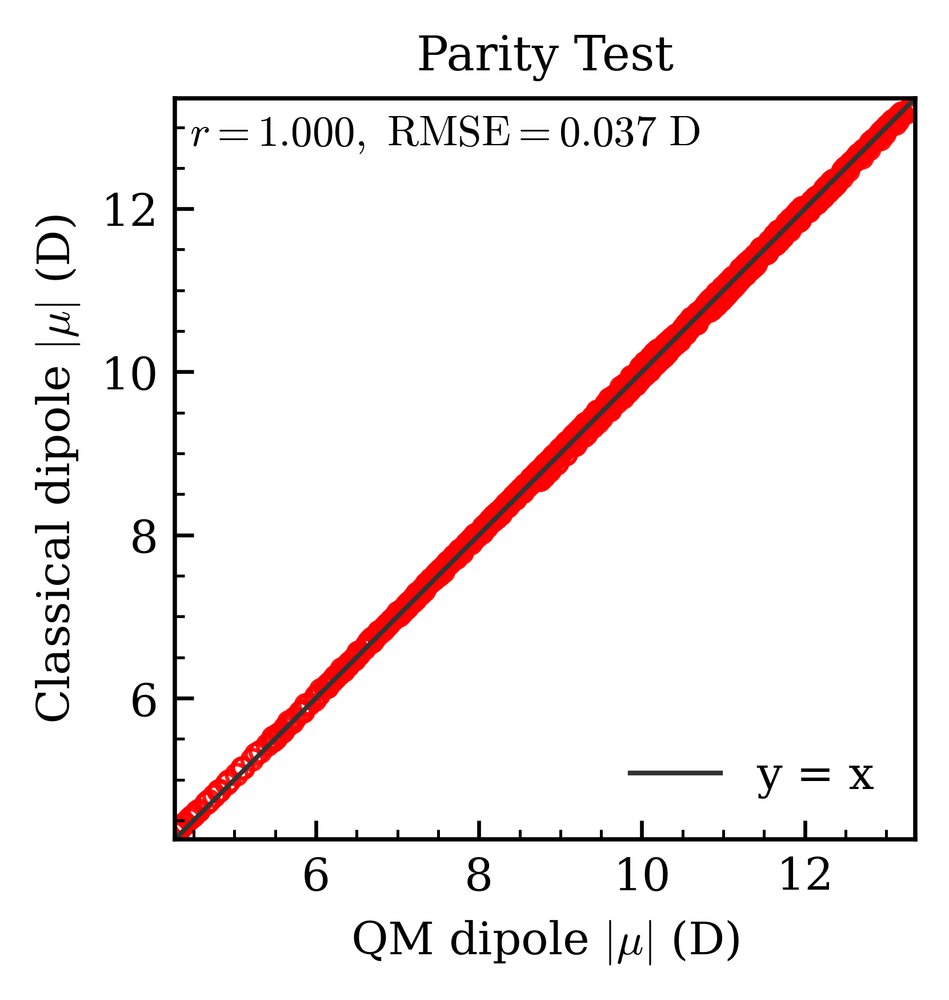

Dipole Cross-Validation
The helper implemented in scripts/print_dipoles.py (and mirrored inside tests/test_dipole.py) compares three sets of dipole moments for a selected frame of a RESP run:
- QM dipole reported directly by TeraChem.
- TeraChem dipole reconstructed from the ESP-unrestrained charges written in
resp.out. - Lagrange dipole generated from the fitted charges returned by the linear ESP solver.
The helper parses the frame in resp.out, converts the logged center of mass to bohr, and computes dipoles in Debye via:
with coordinates expressed in bohr. It also reports a mass-weighted center of mass derived from the supplied geometry .xyz file; you can override the coordinates (Å or bohr) when calling center_of_mass_bohr_from_xyz if you need to reuse RESP geometries directly. The return dictionary contains each dipole vector/magnitude, their deltas relative to the QM reference, and both COM estimates.
Script entry point
scripts/print_dipoles.py bundles the full workflow:
python scripts/print_dipoles.py data/raw/resp.out data/raw/esp.xyz data/raw/1.pose.xyz 78 --frame -1
- The script builds the linear system, fits charges with the explicit Lagrange projection, and prints the QM, TeraChem, and Lagrange dipoles plus their deltas.
--framechooses which RESP frame to analyze (-1= last). The geometry.xyzsupplies element ordering for mass lookup when computing the mass-weighted COM.
Typical output
QM (from resp.out log)
vector (Debye): [-0.123 ...]
|μ| (Debye): 2.345678
Terachem charges (RESP log)
vector (Debye): [-0.121 ...]
|μ| (Debye): 2.346100
Δ vector vs QM (Debye): [0.002 ...]
Δ|μ| vs QM (Debye): 0.000422
Lagrange multiplier fit (explicit)
vector (Debye): [-0.120 ...]
|μ| (Debye): 2.345900
Δ vector vs QM (Debye): [0.003 ...]
Δ|μ| vs QM (Debye): 0.000222
Use this readout to sanity-check that your fitted charges reproduce the QM dipole within an acceptable tolerance before exporting them to downstream workflows.
Parity visualisation
The example notebook in notebooks/ produces a parity plot comparing the QM dipole magnitude against the TeraChem ESP reconstruction across every frame. The figure below highlights the excellent agreement and annotates the RMSE.

Colours denote the absolute deviation |Δ| in Debye.
Programmatic use
See tests/test_dipole.py for a complete, importable example. The test implements _three_dipoles_for_frame inline so you can copy it into your own workflow if the CLI output is not sufficient.